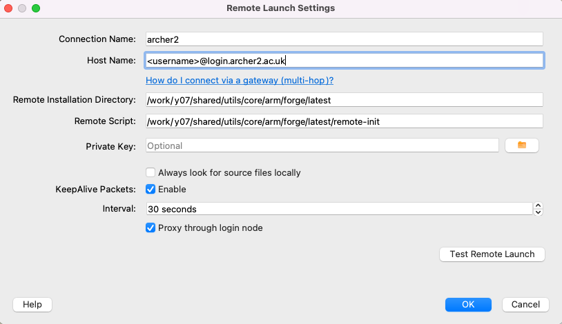

Arm Forge
Arm Forge
Arm Forge provides debugging and profiling tools for MPI parallel applications, and OpenMP or pthreads multi-threaded applications (and also hydrid MPI/OpenMP). The debugger and profiler are called DDT and MAP, respectively.
ARCHER2 has a license for up to 64 nodes (8192 cores) shared between all users at any one time. (Note, cores are counted by the license, not MPI processes, threads, or any other software entity.)
There are two ways of running the Arm user interface. If you have a good internet connection to ARCHER2, the GUI can be run on the front-end (with an X-connection). Alternatively, one can download a copy of the Forge remote client to your laptop or desktop, and run it locally. The remote client should be used if at all possible.
To download the remote client, see the Arm developer download pages. Version 22.1.1 is known to work at the time of writing. Connecting with the remote client is discussed below.
Note
Arm Forge is a commercial package for which CSE has a licence until April 2023. Availability of Forge beyond April 2023 will depend on continued funding for the license. Therefore, please let us know if Arm Forge is useful in your work.
One time set-up for using Forge
A preliminary step is required to set up the necessary
Forge configuration files that allow DDT and MAP to initialise its
environment correctly so that it can, for example, interact with
the SLURM queue system. These steps should be performed in the /work
file system on ARCHER2.
It is recommended that these commands are performed in the top-level work
file system directory for the user account, i.e., ${/work/.../}.
module load arm/forge
cd ${work/.../}
source ${FORGE_DIR}/config-init
This will create a directory ${/work/...}/.allinea that contains the following files.
system.config user.config
The directory will also store other relevant files when Forge is run.
Warning
The config-init script will output a warning, ...failed to read system config.
Please ignore: subsequent output should indicate that the new configuration
files have been created.
Once you have created this directory, you also need to modify the system.config file in the directory ${/work/.../.allinea}, editing the line
shared directory = ~
To instead point to your ${/work/.../.allinea} directory, i.e. if you are in the z19 project, that would be:
shared directory = /work/z19/z19/$USER/.allinea
Using DDT
DDT (Distributed Debugging Tool) provides an easy-to-use graphical interface for source-level debugging of compiled C/C++ or Fortran codes. It can be used for non-interactive debugging, and there is also some limited support for python debugging.
Preparation
To prepare your program for debugging, compile and link in the normal way
but remember to include the -g compiler option to retain symbolic
information in the executable. For some programs, it may be necessary
to reduce the optimisation to -O0 to obtain full and consistent
information. However, this in itself can change the behaviour of bugs,
so some experimentation may be necessary.
Post-mortem debugging
A non-interactive method of debugging is available which allows information to be obtained on the state of the execution at the point of failure in a batch job.
Such a job can be submitted to the batch system in the usual way. The relevant command to start the executable is as follows.
# ... SLURM batch commands as usual ...
module load arm/forge
export OMP_NUM_THREADS=16
export OMP_PLACES=cores
# Ensure the cpus-per-task option is propagated to srun commands
export SRUN_CPUS_PER_TASK=$SLURM_CPUS_PER_TASK
ddt --verbose --offline --mpi=slurm --np 8 \
--mem-debug=fast --check-bounds=before \
./my_executable
The parallel launch is delegated to ddt and the --mpi=slurm option
indicates to ddt that the relevant queue system is SLURM
(there is no explicit srun). It will also be
necessary to state explicitly to ddt the number of processes
required (here --np 8). For other options see, e.g., ddt --help.
Note that higher levels of memory debugging can result in extremely
slow execution. The example given above uses the default
--mem-debug=fast which should be a reasonable first choice.
Execution will produce a .html format report which can be used
to examine the state of execution at the point of failure.
Interactive debugging: using the client to submit a batch job
You can also start the client interactively (for details of remote launch, see below).
module load arm/forge
ddt
This should start a window as shown below. Click on the DDT panel on the left, and then on the Run and debug a program option. This will bring up the Run dialogue as shown.
Note:
-
One can start either DDT or MAP by clicking the appropriate panel on the left-hand side;
-
If the license has connected successfully, a serial number will be shown in small text at the lower left.
In the Application sub panel of the Run dialog box, details of the executable, command line arguments or data files, the working directory and so on should be entered.
Click the MPI checkbox and specifiy the MPI implementation. This is done by clicking the Details button and then the Change button. Choose the SLURM (generic) implementation from the drop-down menu and click OK. You can then specify the required number of nodes/processes and so on.
Click the OpenMP checkbox and select the relevant number of threads (if there is no OpenMP in the application itself, select 1 thread).
Click the Submit to Queue checkbox and then the associated Configure
button. A new set of options will appear such as Submission template file,
where you can enter ${FORGE_DIR}/templates/archer2.qtf and click OK.
This template file provides many of the options required for a standard batch job.
You will then need to click on the Queue Parameters button in the same
section and specify the relevant project budget, see the Account entry.
The default queue template file configuration uses the short QoS with the
standard time limit of 20 minutes. If something different is required,
one can edit the settings. Alternatively, one can copy the archer2.qtf file
(to ${HOME/home/work}/.allinea) and make the relevant changes. This new
template file can then be specifed in the dialog window.
There may be a short delay while the sbatch job starts. Debugging should then proceed as described in the Allinea documentation.
Using MAP
Load the arm/forge module:
module load arm/forge
Compilation and linking
Compilation should take place as usual. However, an additional set of libraries is required at link time.
The path to the additional libraries required will depend on the programming environment you are using as well as the Cray programming release. Here are the paths for each of the compiler environments consistent with the Cray Programming Release (CPE) 21.04 using the default OFI as the low-level comms protocol:
PrgEnv-cray:${FORGE_DIR}/map/libs/default/cray/ofiPrgEnv-gnu:${FORGE_DIR}/map/libs/default/gnu/ofiPrgEnv-aocc:${FORGE_DIR}/map/libs/default/aocc/ofi
For example, for PrgEnv-gnu the additional options required at link time
are given below.
-L${FORGE_DIR}/map/libs/default/gnu/ofi \
-lmap-sampler-pmpi -lmap-sampler \
-Wl,--eh-frame-hdr -Wl,-rpath=${FORGE_DIR}/map/libs/default/gnu/ofi
The MAP libraries for other Cray programming releases can be found under
${FORGE_DIR}/map/libs. If you require MAP libraries built for the UCX
comms protocol, simply replace ofi with ucx in the library path.
Generating a profile
Submit a batch job in the usual way, and include the lines:
# ... SLURM batch commands as usual ...
module load arm/forge
# Ensure the cpus-per-task option is propagated to srun commands
export SRUN_CPUS_PER_TASK=$SLURM_CPUS_PER_TASK
map -n <number of MPI processes> --mpiargs="--hint=nomultithread --distribution=block:block" --profile ./my_executable
Successful execution will generate a file with a .map extension.
This .map file may be viewed via the GUI (start with either map or
forge) by selecting the
Load a profile data file from a previous run option. The resulting
file selection dialog box can then be used to locate the .map file.
Connecting with the remote client
If one starts the Forge client on e.g., a laptop, one should see the main window as shown above. Select Remote Launch and then Configure from the drop-down menu. In the Configure Remote Connections dialog box click Add. The following window should be displayed. Fill in the fields as shown. The Connection Name is just a tag for convenience (useful if a number of different accounts are in use). The Host Name should be as shown with the appropriate username. The Remote Installation Directory should be exactly as shown. The Remote Script is needed to execute additional environment commands on connection. A default script is provided in the location shown.
/work/y07/shared/utils/core/arm/forge/latest/remote-init
Other settings can be as shown. Remember to click OK when done.

From the Remote Launch menu you should now see the new Connection Name. Select this, and enter the relevant ssh passphase and machine password to connect. A remote connection will allow you to debug, or view a profile, as discussed above.
If different commands are required on connection, a copy of the
remote-init script can be placed in, e.g., ${HOME/home/work}/.allinea
and edited as necessary. The full path of the new script should then be
specified in the remote launch settings dialog box.
Note that the script changes the directory to the /work/ file system so
that batch submissions via sbatch will not be rejected.
Finally, note that ssh may need to be configured so that it picks up
the correct local public key file. This may be done, e.g., via the
local .ssh/config configuration file.
Useful links
- Arm Forge User Guide
- More information on X-window connections to ARCHER2.